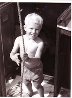
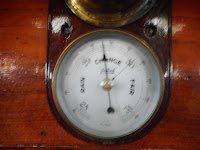
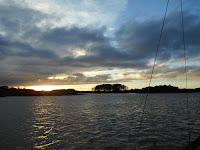
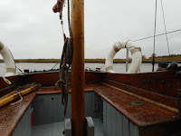
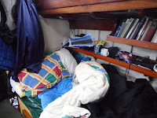
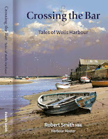
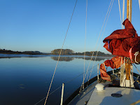
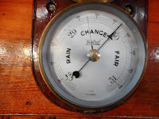

{kind=link}
 |
| my brother, Ned hoisting the mizzen - many years ago |
{kind=link}
I went aft and consulted the mizzen. This is my favourite
sail. My friend George Jepps (who lends his name to a ‘Peter Duck’-ish
character in forthcoming Pebble) once
called it Peter Duck’s “rudder in the
sky” The smallest child can raise or lower it and it’s a sail that will always
try to help if you ask. Former PD
owner Greg Palmer once gave it as his opinion that Arthur Ransome never got the
best out of her sailing because he didn’t understand the mizzen. (I don’t think
he got the measure of her bow either but that’s by the way.)
I hoisted this sweet, tractable, little sail and pinned it
in tightly. Peter Duck turned willingly through 180 degrees and the mizzen held
her there, facing directly into the wind as I heaved up the mainsail, keeping
it sheeted in for as long as I could. Then I released them both, ran forward to
raise the foresail again, held it aback, cast off the mooring and PD was away, turning almost in her own length as we went running down the river.
It was a day of sunshine and squalls, showers and rainbows,
fluorescent against the charcoal sky. I would like to have taken photographs but my hands were too full. The river was channelling the wind so it was almost
always dead astern, thus keeping PD on the point
of gybe. This doesn't worry me as it used to do: I hold her mainsheet
in my hand (instead of keeping it fastened round a cleat) and sail as if she were a dinghy. This makes it possible for me to respond as soon as the airflow goes creeping round the wrong side of the canvas, when the boom twitches and lifts, ready to smash across.
 |
| The marker on the right hand records the pressure at the beginning of the day. The left hand needle shows a 20mb drop. |
{kind=link}
We reached the river mouth almost at the top of the tide.
The sky darkened dramatically, the wind freshened further. If I were heading
for the Orwell or the Walton Backwaters we’d be wind against tide all the way and foul weather when we got there. I didn't want to go to sea -- and I didn't have to.
Peter Duck was reluctant to turn back against the weight of wind -- even the mizzen couldn’t persuade her – so finally I asserted myself with a burst of engine.Then we were beating back up the Deben and the ebb was soon running against us. By tea time the light was failing and the intermittent showers had settled into steady rain. At the top of the Rocks anchorage I gave up. We drifted down to a favourite spot at the entrance to Kirton Creek and picked up a mooring. It was cold and I was glad to shut the cabin doors. By 5pm I was in my bunk with a hot water bottle and a book and by 6pm I was asleep.
Peter Duck was reluctant to turn back against the weight of wind -- even the mizzen couldn’t persuade her – so finally I asserted myself with a burst of engine.Then we were beating back up the Deben and the ebb was soon running against us. By tea time the light was failing and the intermittent showers had settled into steady rain. At the top of the Rocks anchorage I gave up. We drifted down to a favourite spot at the entrance to Kirton Creek and picked up a mooring. It was cold and I was glad to shut the cabin doors. By 5pm I was in my bunk with a hot water bottle and a book and by 6pm I was asleep.
 |
| The sun goes down over Kirton Creek 29.10.2018 |
{kind=link}
Tuesday Oct 30th: The following day offered no temptation to go anywhere as it rained and blew without ceasing. I stayed in the only warm place – my bunk – and read Robert Smith’s Crossing the Bar. Robert is the harbourmaster at Wells-next-to-the-sea. He was born there; learned about the life of the marshes and the longshoremen from his father and grandfather and from his own private adventures and narrow escapes. He worked as a bait-digger, a longshoreman, a docker, a member of the lifeboat crew and of the harbour commissioners. All his life he's been learning from direct experience, from other people and from his environment. Then, once he became harbour master and had access to the centuries of harbour records, he began to research the history of the port.
 |
| Not especially appealing |
{kind=link}
 |
| A better place to be |
{kind=link}
Part of our delight was the relief at being there at all. Wells bar is a sand bank with a fearsome reputation. It’s a killer that makes our mounds of shingle at the Deben mouth seem almost tame by comparison. Even the flood tide hesitates before it comes in.
 |
| Available from Wells Harbour commissioners |
{kind=link}
Later in that summer of 2015 Peter Duck's engine had failed the wrong side of that Wells bar. A combination of lack of wind, tide imperatives, distance to any other port and responsibility to my crew made me glad to accept a tow back into harbour. Peter Duck was stranded there for several weeks and I learned more about the place and the practical kindness of its people. One particular image – apart from the bar itself, which can be watched all day by video cam from the harbour office – that has remained with me was the marker showing the height that the tide had reached in 2013, for higher than the floods of 1953 or the destructive surge of 1978.
In Crossing the Bar Robert Smith explains the enduring impact that the c18th marsh enclosures (when the major landlords extended their agricultural land) has had on the capacity of the marsh to act as reservoir, a sponge, soaking up the mass of water as it surges in under certain meteorological conditions in the North Sea. When the flood breached the walls in both 1978 and 2013, it was reclaiming its former channels, dammed almost three centuries earlier. So why now? You'll have guessed at least part of the answer. Rising sea levels put much of the East Anglian coast at risk, and off the North Norfolk shore, dramatically increased dredging for aggregate (sand and gravel for construction work) may have significantly reduced the invisible protection provided by those outlying shoals. “During the 198os and early 1990s the quayside flooded once or twice every few years. By the late-1990s it was awash with floodwater more regularly and today its not unusual for it to happen six or seven times a year,” writes Smith.
In Crossing the Bar Robert Smith explains the enduring impact that the c18th marsh enclosures (when the major landlords extended their agricultural land) has had on the capacity of the marsh to act as reservoir, a sponge, soaking up the mass of water as it surges in under certain meteorological conditions in the North Sea. When the flood breached the walls in both 1978 and 2013, it was reclaiming its former channels, dammed almost three centuries earlier. So why now? You'll have guessed at least part of the answer. Rising sea levels put much of the East Anglian coast at risk, and off the North Norfolk shore, dramatically increased dredging for aggregate (sand and gravel for construction work) may have significantly reduced the invisible protection provided by those outlying shoals. “During the 198os and early 1990s the quayside flooded once or twice every few years. By the late-1990s it was awash with floodwater more regularly and today its not unusual for it to happen six or seven times a year,” writes Smith.
After 1978 and again after 2013 Wells cleared up, refilled the breaches, built new and stronger walls. Crossing the Bar proposes that the town should look again at its history and make an accommodation with the flooding tide that will allow it, in extremis, to have its way. Divert the banks so it empties itself where it powerfully wishes to go – on the former Slade marsh and on some of that reclaimed agricultural land. Not ideal of course but very much better than watching the water pouring up the streets of the town, flooding properties and putting lives at risk. Smith remembers himself as a younger man watching the 1978 flood as a spectacle but “now I’m harbour master there’s nothing I find exciting about a tidal surge”.
Smith has needed to overcome dyslexia to write this book. "I can become impatient with myself as I try to articulate the pictures in my head and the stories told to me into words on a page." (Many non-dyslexic writers will sympathise with this!) He sees this mental barrier as analogous with the physical challenge sailors face when they are crossing the bar (and you might like to reread his passage on the build-up of the flood tide as a metaphor for inspiration and writing compulsion). In Crossing the Bar Smith has produced a compelling account of human relationship with the forces of nature. I read it all day as the rain drummed on the cabin roof and Peter Duck jerked and snubbed against her mooring chain. When I finished my first reading, I began again.
Smith has needed to overcome dyslexia to write this book. "I can become impatient with myself as I try to articulate the pictures in my head and the stories told to me into words on a page." (Many non-dyslexic writers will sympathise with this!) He sees this mental barrier as analogous with the physical challenge sailors face when they are crossing the bar (and you might like to reread his passage on the build-up of the flood tide as a metaphor for inspiration and writing compulsion). In Crossing the Bar Smith has produced a compelling account of human relationship with the forces of nature. I read it all day as the rain drummed on the cabin roof and Peter Duck jerked and snubbed against her mooring chain. When I finished my first reading, I began again.
Wednesday October 31st
 |
| Early morning Kirton Creek 31.10.2018 |
{kind=link}
 |
| The depression has gone |
{kind=link}
Postscript:
I'd snatched those few days away as a reward for the effort it had taken to get Pebble (Strong Winds volume 6) to the printer. This week (Nov 8th) I've been putting copies into envelopes and boxes to send them out to readers. All I want to say in the light of this post is that when I'm writing these stories I always have the detailed local tide tables beside me -- and sunrise, sunset and (often) moon phase information as well. My plots may be preposterous but I don't muck about with nature.